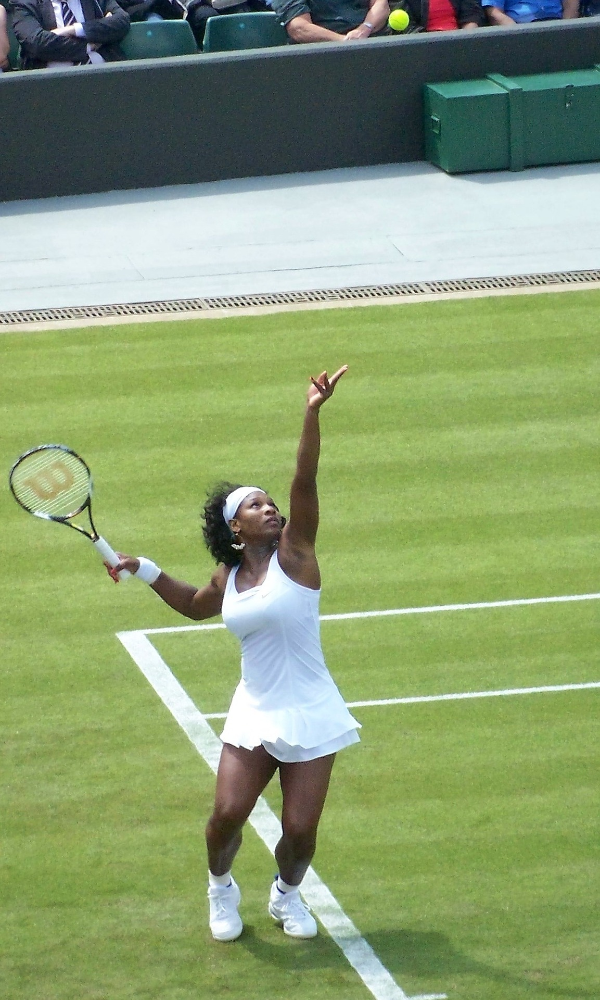
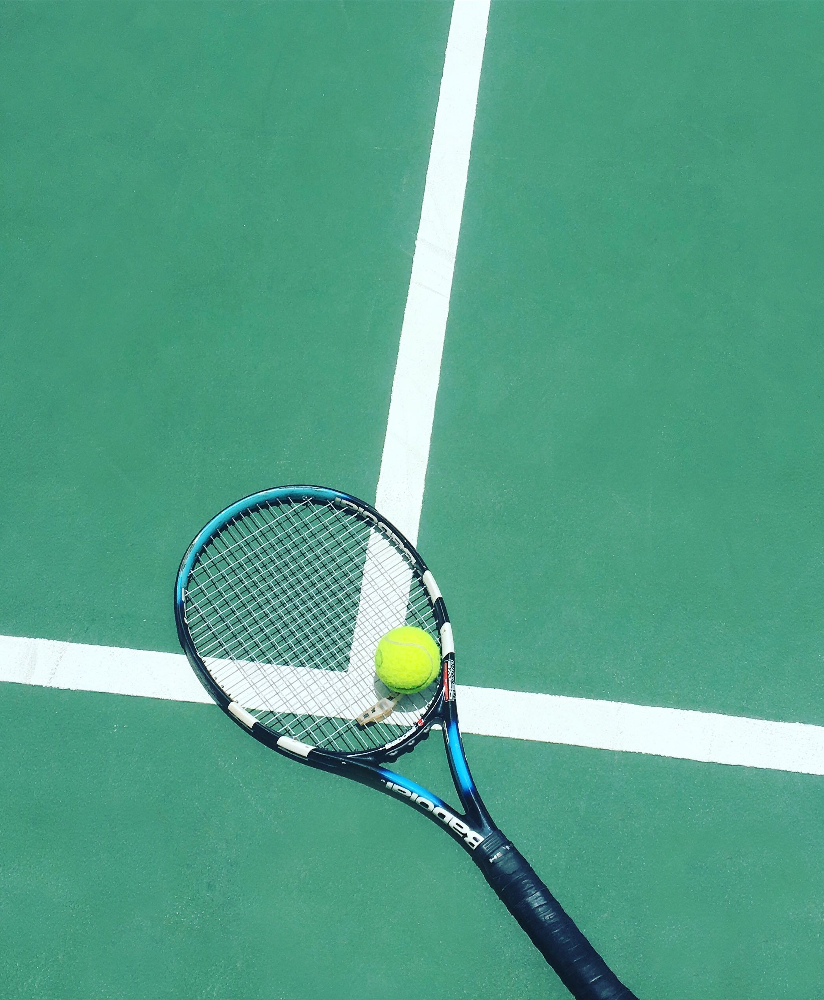

Who am I?
Serena is a daughter to Richard and Oracene Williams, the youngest of five children. Serena was born in Saginaw, MI in 1981. Serena moved when she was young to Compton Los Angeles which was a rough place to live. As serena grew up she learned tennis from her father in los angeles. Serena and her siblings played tennis growing up and fell in love with it just like thier father had. Serena eventually became a world renound Pro Tennis Player alongside her sister Venus . During her record breaking career Serena fell in love with her now husband Alexis Ohanian whom they share a daughter Alexis Olympia Ohanian Jr.
 